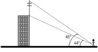
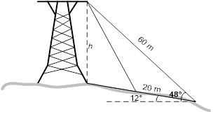

Une antenne de télévision est érigée sur le toit d’un édifice. Un observateur, placé à 200 m du pied de l’édifice, voit la base et le sommet de l’antenne sous des angles d’élévation respectifs de 44° et 46°. Calculer la longueur de l’antenne.
Le pylône est installé au sommet d’une petite colline ayant un angle d’élévation de 12°. Ce pylône est retenu par deux câbles du même côté du pylône et dont les points d’ancrage seront distants de 20 m. Le plus long des deux câbles mesure 60 m et fait un angle de 48° avec l’horizontale. Trouver la longueur de l’autre câble et la hauteur du pylône.
